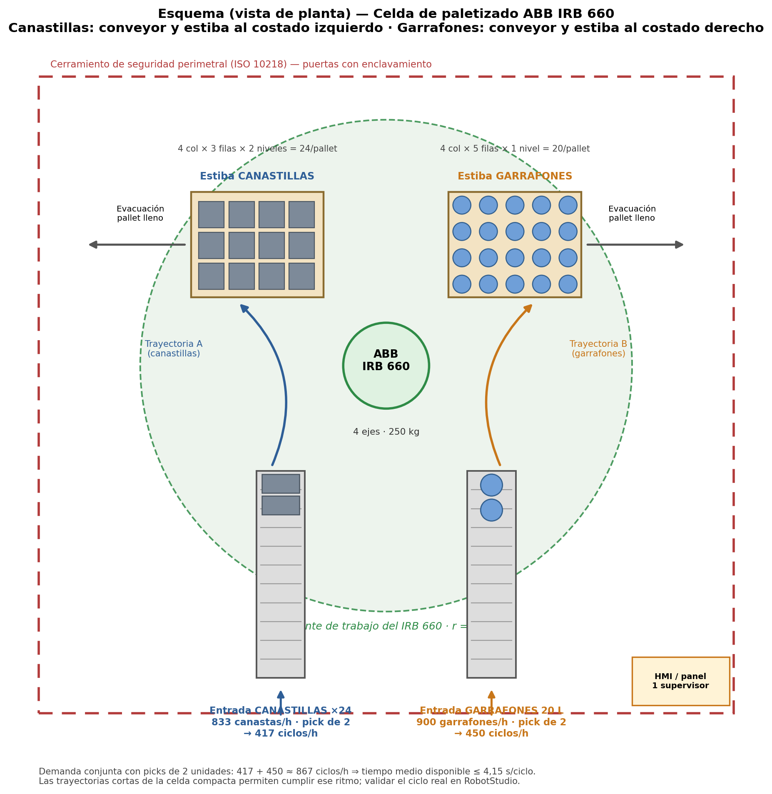
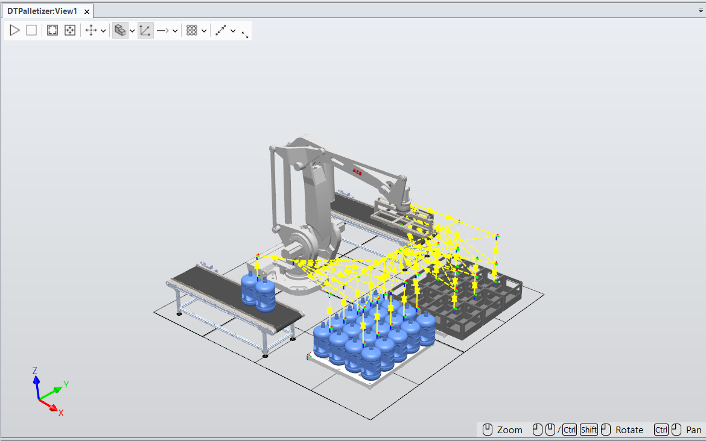

El fin de línea de las dos líneas se resuelve con una única celda central de paletizado servida por un robot ABB IRB 660, que paletiza en paralelo las canastas de gaseosa y los garrafones, alternando entre dos posiciones de pallet. Esta sección documenta la justificación, la selección del robot y su herramienta, el balance de ciclos y la seguridad de la celda.
Justificación de la celda
En el diseño actual el paletizado de ambas líneas se ejecutaría de forma manual. Una canasta llena de 24 botellas pesa ≈ 20,7 kg y un garrafón lleno ≈ 21 kg; la línea de gaseosa entrega ≈ 833 canastas/h (≈ 17,2 t/h) y la de garrafones 900 u/h (≈ 18,9 t/h). Estas cargas y frecuencias superan ampliamente los límites recomendados de manipulación manual (ecuación NIOSH): un operario no podría sostener el ritmo sin riesgo dorsolumbar. El paletizado manual es el principal cuello de botella y riesgo del diseño actual.
Selección de robot y herramienta (EOAT)
El ABB IRB 660 es un robot paletizador dedicado de 4 ejes, con alcance suficiente para atender ambas líneas desde una posición central. Su capacidad de carga deja amplio margen frente al pick más pesado.
| Característica | Valor |
|---|---|
| Tipo | Robot paletizador dedicado |
| Ejes | 4 |
| Alcance | 3,15 m |
| Capacidad de carga | 250 kg |
| Estaciones que atiende | Hasta 4 transportadores de entrada, 2 posiciones de pallet y 1 estación de hojas separadoras |
Herramienta terminal (EOAT). Un gripper multiproducto de 4 posiciones (masa estimada ≈ 40 kg) que toma 2 unidades por ciclo (2 canastas o 2 garrafones, según la trayectoria).
Balance de ciclos de la celda
El dimensionamiento parte de las demandas horarias de ambas líneas y de un gripper que toma 2 unidades por ciclo. La demanda conjunta representa una utilización del 96 % de la capacidad estimada del robot, dejando margen para cambios de pallet, hojas separadoras y microparadas.
| Paso | Cálculo | Resultado |
|---|---|---|
| Flujo de canastas (L1) | 20 000 bot/h ÷ 24 bot/canasta | 833,3 canastas/h |
| Ciclos línea gaseosa | 833,3 ÷ 2 canastas/ciclo | 416,6 ciclos/h |
| Flujo de garrafones (L2) | Demanda de la línea | 900 garrafones/h |
| Ciclos línea garrafón | 900 ÷ 2 garrafones/ciclo | 450,0 ciclos/h |
| Ciclos totales requeridos | 416,6 + 450,0 | 866,3 ciclos/h (14,4/min) |
| Tiempo disponible por ciclo | 3 600 s ÷ 866,3 | 4,16 s/ciclo |
| Ciclo estimado del IRB 660 | Pick de 2 uds, traslado ≤ 3,15 m, place y retorno | 4,0 s/ciclo → 900 ciclos/h |
| Utilización del robot | 866,3 ÷ 900 | 96,25 % |
Layout de celda y conformación de pallets
La celda se ubica al final de ambas líneas. El robot atiende de forma alternada dos transportadores de entrada (canastas y garrafones) y dos posiciones de pallet —una por producto—, con evacuación automática del pallet completo por transportadores de rodillos y un dispensador de estibas y hojas separadoras dentro de la celda.
| Línea | Patrón | Unidades/pallet | Masa aprox. | Pallets/h |
|---|---|---|---|---|
| Gaseosa 400 mL | 12 canastas/capa × 2 capas | 24 canastas | ≈ 497 kg | ≈ 34,7 |
| Garrafón 20 L | 20 garrafones/capa × 1 capa (hojas separadoras) | 20 garrafones | ≈ 420 kg | ≈ 45,0 |

Simulación en RobotStudio
La estación virtual en RobotStudio validará trayectorias, tiempos de ciclo y detección de interferencias frente al balance teórico (4,0 s/ciclo, 96 % de utilización), con exportación de evidencias (capturas, video y lista de tiempos).

La seguridad de la celda se evaluó conforme a ISO 14121-1 (ver más abajo) y el alcance del robot se tuvo en cuenta en el diseño del layout. La verificación detallada de alcance, trayectorias y tiempos de ciclo en RobotStudio se contempló y queda planificada como trabajo futuro; no forma parte del alcance actual del proyecto.
Seguridad funcional y dispositivos
La celda se diseña bajo la norma ISO 10218 (robots industriales, tipo C), con protección perimetral y enclavamientos con el resto de la línea. La cadena de seguridad —puerta enclavada, cortinas ópticas y paros de emergencia— se cablea sobre relés o PLC de seguridad con un piso general de PL d / Categoría 3 (ISO 13849-1) y PL e para las funciones que impiden el acceso a la envolvente con el robot en automático.
- Cerramiento perimetral fijo (≥ 1 800 mm, ISO 14120) con acceso de personal por una única puerta con enclavamiento y bloqueo de resguardo (ISO 14119) y dispositivo anti-encierro.
- Cortinas ópticas con muting automático en las dos posiciones de tarima y en los túneles de los transportadores; distancia mínima según ISO 13855 (S = K·T + C, K = 1 600 mm/s).
- Paros de emergencia (ISO 13850) en la puerta, el pupitre del operador y el FlexPendant; modo manual limitado a velocidad reducida (≤ 250 mm/s) con dispositivo de validación de tres posiciones.
- Espacio restringido por software (World Zones del IRC5 / SafeMove) que recorta la envolvente de R 3 150 mm a los sectores robot–transportadores–tarimas efectivamente usados.
Evaluación del riesgo (ISO 14121-1)
Se evaluó el riesgo de la celda de paletizado dual sobre el layout existente (sin rediseño físico) conforme a la UNE-EN ISO 14121-1. La estimación usa el grafo de riesgos de ISO 13849-1 (parámetros S, F y P), que traduce cada situación peligrosa en un nivel de prestaciones requerido (PLr) y en un nivel de riesgo cualitativo. Se identificaron 9 situaciones peligrosas (P-01 a P-09) y un programa de 13 medidas (M-01 a M-13) por el método de los tres pasos.
Criterios de estimación (S · F · P)
| Parámetro | Nivel | Criterio adoptado |
|---|---|---|
| Gravedad (S) | S1 | Lesión leve, normalmente reversible (contusión, corte superficial). |
| S2 | Lesión seria irreversible o muerte (aplastamiento, impacto por brazo cargado, choque eléctrico). | |
| Frecuencia / duración (F) | F1 | Exposición poco frecuente y/o de corta duración (mantenimiento programado). |
| F2 | Exposición frecuente a continua y/o de larga duración (cambio de tarima, desatascos, teach). | |
| Evitabilidad (P) | P1 | Posible en ciertas condiciones (movimiento perceptible, velocidad reducida, procedimiento aplicable). |
| P2 | Apenas posible: suceso súbito, sin advertencia (velocidad de proceso, arranque intempestivo). |
Correspondencia estimación → PLr → nivel de riesgo
| Combinación S–F–P | PLr | Nivel de riesgo | Decisión (cap. 8) |
|---|---|---|---|
| S1–F1–P1 / S1–F1–P2 | a – b | Bajo | Aceptable; solo información de uso. |
| S1–F2–Px / S2–F1–P1 | b – c | Medio | Requiere medidas; iterar. |
| S2–F1–P2 / S2–F2–P1 | d | Medio-Alto | Requiere protección y control PL d. |
| S2–F2–P2 | e | Alto | Reducción obligatoria antes de la puesta en servicio. |
Matriz de riesgo (inicial y residual)
| ID | Situación peligrosa (tarea / zona) | Peligro | S | F | P | Riesgo inicial (PLr) | Medidas | Riesgo residual |
|---|---|---|---|---|---|---|---|---|
| P-01 | Reacomodo manual de garrafón/canasta con la celda en automático (mal uso previsible) — interior de la envolvente R 3 150 mm | Mecánico: elementos móviles del robot → impacto y aplastamiento | S2 | F2 | P2 | Alto (PLr e) | M-01, M-02, M-03, M-04, M-06, M-09, M-11 | Bajo |
| P-02 | Retiro/reposición de tarima (montacarguista, operador) — posiciones de tarima y periferia | Mecánico: aplastamiento entre brazo/carga y tarima o estructura | S2 | F2 | P2 | Alto (PLr e) | M-02, M-03, M-05, M-06, M-09, M-10, M-11 | Bajo-Medio |
| P-03 | Operación automática: transferencia robot → tarima con producto sujetado — trayectoria sobre transportadores | Mecánico: caída de objetos (garrafón ≈ 22 kg desde 1,5–2 m) | S2 | F1 | P1 | Medio (PLr c) | M-07, M-08, M-11, M-12 | Bajo |
| P-04 | Desatasco en los extremos de picking de los transportadores — X = 1 000; Y = ±1 800 y túneles | Mecánico: atrapamiento en rodillos; alcance del robot | S2 | F2 | P1 | Medio-Alto (PLr d) | M-03, M-04, M-06, M-11, M-12 | Bajo |
| P-05 | Programación / teach y verificación de trayectorias — interior de la envolvente | Mecánico: movimiento no esperado del robot durante el aprendizaje | S2 | F2 | P1 | Medio-Alto (PLr d) | M-08, M-09, M-11, M-12 | Bajo-Medio |
| P-06 | Puesta en marcha intempestiva por escritura desde el proceso (PLC/OPC UA) — toda la celda | Sistemas programables (7.3.6): arranque inesperado / neutralización | S2 | F1 | P2 | Alto (PLr d) | M-06, M-07, M-08, M-11 | Bajo |
| P-07 | Mantenimiento eléctrico: armario, IRC5 y canalizaciones — armario eléctrico y periferia | Eléctrico: contacto con partes activas → choque, quemadura | S2 | F1 | P1 | Medio (PLr c) | M-11, M-12, M-13 | Bajo |
| P-08 | Operación automática en la esquina lejana del patrón 4×3 de canastas (≈ 3,35 m > 3,15 m nominal) — tarima de canastas | Mecánico: colisión del brazo, proyección/caída de la canasta de vidrio | S2 | F1 | P1 | Medio (PLr c) | M-01, M-07, M-12 | Bajo-Medio |
| P-09 | Cambio o mantenimiento del efector final (pinza/ventosas) — brida del robot | Mecánico: caída del efector/carga por pérdida de energía (vacío/aire) | S2 | F1 | P1 | Medio (PLr c) | M-11, M-12, M-13 | Bajo |
S = gravedad · F = frecuencia y duración de la exposición · P = posibilidad de evitar el daño · PLr = nivel de prestaciones requerido (ISO 13849-1). Los niveles residuales suponen la implantación completa y verificada de las medidas.
Programa de medidas — método de los tres pasos (M-01 a M-13)
| ID | Paso | Medida de reducción del riesgo | Norma |
|---|---|---|---|
| M-01 | a) Diseño | Espacio restringido por software (World Zones del IRC5 / SafeMove) que recorta la envolvente a los sectores usados. No modifica el layout. | ISO 10218-1; 13849-1 |
| M-02 | a) Diseño | Elevación de los extremos de picking y cierre de los laterales del transportador en el tramo interior (sin alcance manual sobre la banda dentro de la celda). | ISO 13857 |
| M-03 | b) Protección | Vallado perimetral fijo ≥ 1 800 mm alrededor del layout (perímetro ≈ 8 × 8 m centrado en el robot, con pasillo interior de mantenimiento). | ISO 14120; 13857 |
| M-04 | b) Protección | Túneles de paso de los transportadores dimensionados según ISO 13857; si la geometría obliga a mayor abertura, cortina fotoeléctrica con muting. | ISO 13857; IEC 61496; ISO 13855 |
| M-05 | b) Protección | Puertas de material en las dos posiciones de tarima con cortinas ópticas y muting automático; distancia mínima S = K·T + C (K = 1 600 mm/s). | ISO 13855; IEC 61496 |
| M-06 | b) Protección | Puerta única de acceso de personal con enclavamiento y bloqueo de resguardo, con dispositivo anti-encierro (solicitud de acceso / llave atrapada). | ISO 14119; 10218-2 |
| M-07 | b) Protección | Cadena de seguridad cableada sobre relés/PLC de seguridad, separada del Logix estándar, del OPC UA y de Ignition. Ninguna función depende del handshake de proceso. | ISO 13849-1 (PL d/Cat. 3 mín., PL e para acceso a envolvente); 14121-1 §7.3.6 |
| M-08 | b) Protección | Paradas de emergencia en la puerta, el pupitre del operador y el FlexPendant, con categoría de parada acorde. | ISO 13850; IEC 60204-1 |
| M-09 | b) Protección | Modo manual limitado a velocidad reducida (≤ 250 mm/s) con dispositivo de validación de tres posiciones. | ISO 10218-1 |
| M-10 | b) Protección | Delimitación en piso y barrera física de la ruta del montacargas (retiro de tarimas siempre desde el exterior del vallado). | ISO 3691-4 (ref.) |
| M-11 | c) Información | Señalización de zona robotizada, carga suspendida y riesgo eléctrico; baliza luminosa física comandada desde el PLC (el Andon de Perspective es informativo). | ISO 7010; IEC 60204-1 |
| M-12 | c) Información | Procedimientos y formación diferenciada (operador/técnico/montacarguista): retiro de tarimas, desatasco en paro seguro, verificación de alcance en RobotStudio. | ISO 14121-1 §8.2.1 c); 12100 |
| M-13 | c) Información | Consignación de energías (LOTO), incluida la purga del circuito neumático/de vacío del efector, antes de cualquier mantenimiento. | IEC 60204-1; ISO 14118 |
Riesgos residuales declarados
- Exposición durante la ventana de muting en la salida de la tarima llena (P-02) — riesgo residual principal.
- Trabajo dentro de la envolvente en modo manual a velocidad reducida durante la programación (P-05).
- Alcance límite en la esquina lejana del patrón de canastas (P-08) — verificación de alcance considerada y prevista como trabajo futuro (A-01).
- Manipulación manual de cargas durante el cambio del efector final (P-09).
Acciones consideradas · trabajo futuro
Estas acciones de cierre se tuvieron en cuenta en la evaluación del riesgo y quedan planificadas como trabajo futuro; no se contemplan más verificaciones de seguridad en RobotStudio dentro del alcance actual del proyecto.
- A-01: verificación de alcance de la esquina lejana del patrón 4×3 de canastas (≈ 3,35 m) en RobotStudio. Considerada en el análisis; de confirmarse inalcanzable, se corregiría el patrón de estiba o el offset de la tarima. Prevista como trabajo futuro.
- A-02: cálculo del PL alcanzado de cada función de seguridad (MTTFd, DC, CCF) y documentación de la validación conforme a ISO 13849-2.
- A-03: cálculo del tiempo de respuesta total del sistema (T) para dimensionar las distancias de las cortinas con ISO 13855.
Fuente: Informe de Evaluación del Riesgo — celda robotizada de paletizado dual (UNE-EN ISO 14121-1), rev. 01, 14 de julio de 2026. Normas complementarias: ISO 12100, 10218-1/-2, 13849-1/-2, 13850, 13855, 13857, 13854, 14119, 14120, 14118, IEC 61496 e IEC 60204-1.